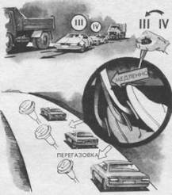

Опережающее включение понижающих передач для повышения безопасности
Постоянно увеличивающаяся цена бензина повлияла на технику управления автомобилем. Большинство водителей стали пользоваться повышающими передачами, чтобы уменьшить частоту вращения коленчатого вала двигателя и снизить расход топлива. С точки зрения экономии эта тенденция положительная, но в плане безопасности отрицательная. Чем меньше тяга двигателя, тем уже диапазон возможностей для преодоления критической ситуации экстренным маневром. К сожалению, большинство водителей выработали прочный навык к переключению понижающих передач, только когда “двигатель не тянет” и частота вращения падает ниже 2000 об/мин (имеются в виду скоростные модели легковых автомобилей, у которых максимальная тяга – крутящий момент – соответствует 3500–4000 об/мин).

Когда вы экономите бензин, не делайте это за счет собственной безопасности. Исключите движение накатом из водительской практики, В сложных ситуациях поднимите мощность двигателя включением понижающей передачи. Так легче преодолеть критическую ситуацию за счет динамики автомобиля.
Особенно опасно потерять мощность при движении на подъем, при обгоне, экстренном объезде препятствия, на крутом повороте, колее, глубоком снегу и т. д.
Если существует выбор, на какой передаче преодолеть поворот (“с недокрутом” на повышающей передаче или “с перекрутом” на понижающей), то в плане безопасности лучше выбрать второй вариант. Преимуществ несколько. Они обусловлены возможностями:
– использовать тормозной эффект двигателя для загрузки передних колес;
– противодействовать центробежной силе мощностью двигателя;
– дозированно тормозить при повороте, не боясь блокирования колес;
– использовать ускорение для преодоления критической ситуации.
Однако поздно реагировать на потерю мощности переключением передач, так как во время этой операции теряется 300—2000 об/мин (в зависимости от квалификации водителя, передаточного отношения коробки передач, характеристики двигателя и способа переключения). Сохранить мощность можно, лишь опередив ситуацию, не давая упасть оборотам.
Переключению низшей передачи должна предшествовать “перегазовка”, выполняемая необычным способом: задержкой включения сцепления при полностью открытом дросселе. Выполняется этот прием следующим образом.
Водитель, двигаясь на повышающей передаче (например, IV) на подъем, нажимает на педаль подачи топлива до упора, но эффекта ускорения нет, так как двигатель еще раньше потерял мощность. Не прекращая нажатия на педаль подачи топлива, нужно медленно(!) выжать педаль сцепления. Двигатель тотчас отреагирует на такое действие резким увеличением частоты вращения. За это время включается понижающая передача. Как только будет достигнута максимальная частота вращения, можно включить сцепление. Автомобиль отреагирует на этот прием резким ускорением. Время задержки включения сцепления легко дозируется. Водитель-профессионал на этот прием затратит менее 0,5 с.
Но следует еще раз отметить, что такой прием актуален не когда двигатель потерял мощность и ситуация стала угрожающей, а раньше. Поэтому он и называется опережающим.